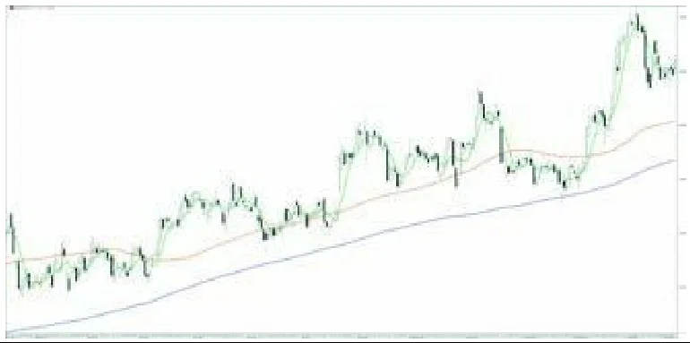
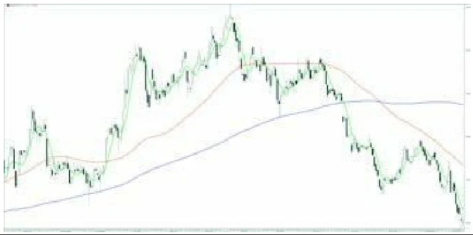
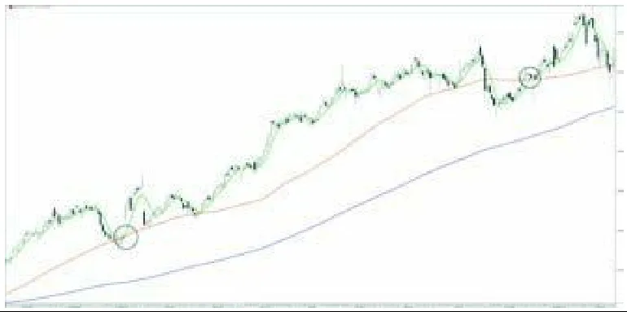
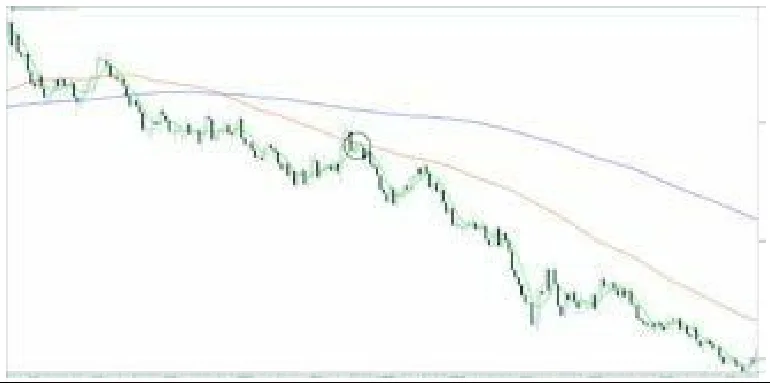
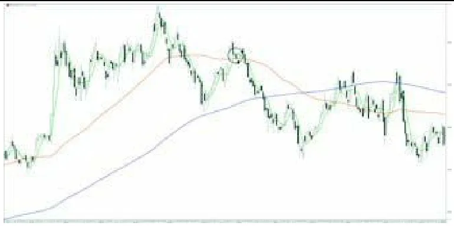
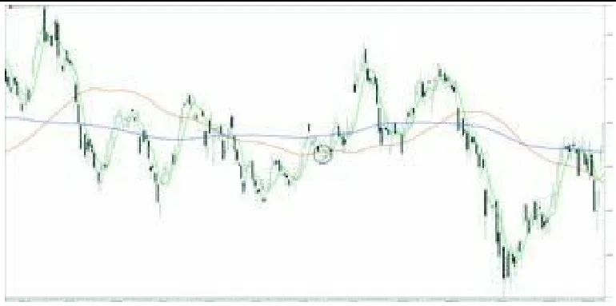

跳到教程正文
跳到教程正文你看到：短线由下穿上长线，之后两线抬高
这说明什么：近期平均改善，并开始带动更长平均。
还不能说明什么：并不确定涨势起点，也不代表买入就不回撤。
从零理解的中文读图课 · 入门
画一条短均线和一条长均线，看看谁在上面。短线向上穿过长线，说明近期平均价相对更强；向下穿过则相反。
模拟资产，非真实历史或预测。每根为1小时已收盘K线；展示48根，指标另用前72根预热。图较宽时左右滑动，或展开数值表。
SMA 9 101.13 / SMA 21 101.64 · 末根已收盘读数
黑色实线是9期SMA，蓝灰虚线是21期SMA。先比较前后两根，再认交叉方向。
最后一根：开 100.84，高 101.62，低 100.15，收 101.28；成交 53,674 股。先在图最右边找到它，再与表格核对。
| 时间 | O | H | L | C | 成交量 |
|---|---|---|---|---|---|
| 01-04 00:00 | 102.19 | 102.38 | 101.82 | 102.32 | 14376 |
| 01-04 01:00 | 102.32 | 102.46 | 102.21 | 102.42 | 10321 |
| 01-04 02:00 | 102.42 | 102.44 | 101.68 | 101.68 | 16634 |
| 01-04 03:00 | 101.68 | 101.82 | 101.30 | 101.82 | 7165 |
| 01-04 04:00 | 101.82 | 101.89 | 101.53 | 101.73 | 5764 |
| 01-04 05:00 | 101.73 | 101.94 | 101.63 | 101.73 | 6506 |
| 01-04 06:00 | 101.73 | 102.04 | 101.54 | 101.69 | 8801 |
| 01-04 07:00 | 101.69 | 101.94 | 101.40 | 101.79 | 11515 |
| 01-04 08:00 | 101.79 | 101.88 | 101.42 | 101.70 | 8681 |
| 01-04 09:00 | 101.70 | 101.92 | 101.42 | 101.92 | 12800 |
| 01-04 10:00 | 101.92 | 102.05 | 101.62 | 101.68 | 13727 |
| 01-04 11:00 | 101.68 | 102.11 | 101.64 | 102.11 | 32879 |
| 01-04 12:00 | 102.11 | 102.46 | 102.11 | 102.40 | 16864 |
| 01-04 13:00 | 102.40 | 102.92 | 102.37 | 102.92 | 28244 |
| 01-04 14:00 | 102.92 | 103.30 | 102.65 | 102.87 | 40685 |
| 01-04 15:00 | 102.87 | 103.10 | 102.20 | 102.36 | 60611 |
| 01-04 16:00 | 102.36 | 103.03 | 102.19 | 102.92 | 67942 |
| 01-04 17:00 | 102.92 | 103.19 | 102.70 | 103.00 | 34637 |
| 01-04 18:00 | 103.00 | 103.05 | 102.32 | 102.50 | 53976 |
| 01-04 19:00 | 102.50 | 102.79 | 102.06 | 102.17 | 36053 |
| 01-04 20:00 | 102.17 | 102.69 | 101.97 | 102.58 | 34200 |
| 01-04 21:00 | 102.58 | 102.73 | 102.18 | 102.60 | 23454 |
| 01-04 22:00 | 102.60 | 102.68 | 102.21 | 102.27 | 21251 |
| 01-04 23:00 | 102.27 | 102.67 | 102.19 | 102.51 | 13238 |
| 01-05 00:00 | 102.51 | 102.61 | 102.08 | 102.19 | 11110 |
| 01-05 01:00 | 102.19 | 102.23 | 101.50 | 101.54 | 15225 |
| 01-05 02:00 | 101.54 | 101.74 | 101.17 | 101.45 | 8036 |
| 01-05 03:00 | 101.45 | 101.97 | 101.37 | 101.80 | 8568 |
| 01-05 04:00 | 101.80 | 101.80 | 101.22 | 101.32 | 8310 |
| 01-05 05:00 | 101.32 | 101.78 | 101.27 | 101.63 | 10655 |
| 01-05 06:00 | 101.63 | 101.96 | 101.21 | 101.90 | 15133 |
| 01-05 07:00 | 101.90 | 102.22 | 101.86 | 102.14 | 5966 |
| 01-05 08:00 | 102.14 | 102.52 | 101.96 | 102.24 | 7860 |
| 01-05 09:00 | 102.24 | 102.45 | 101.76 | 102.34 | 15328 |
| 01-05 10:00 | 102.34 | 102.64 | 102.13 | 102.46 | 9226 |
| 01-05 11:00 | 102.46 | 102.98 | 102.42 | 102.46 | 10016 |
| 01-05 12:00 | 102.46 | 102.51 | 101.94 | 102.07 | 12897 |
| 01-05 13:00 | 102.07 | 102.44 | 102.01 | 102.10 | 6636 |
| 01-05 14:00 | 102.10 | 102.21 | 101.63 | 101.87 | 8213 |
| 01-05 15:00 | 101.87 | 101.98 | 101.49 | 101.60 | 10754 |
| 01-05 16:00 | 101.60 | 101.62 | 101.32 | 101.33 | 11573 |
| 01-05 17:00 | 101.33 | 101.42 | 100.84 | 101.16 | 14527 |
| 01-05 18:00 | 101.16 | 101.68 | 100.93 | 101.48 | 14715 |
| 01-05 19:00 | 101.48 | 101.77 | 101.30 | 101.64 | 10355 |
| 01-05 20:00 | 101.64 | 101.64 | 99.76 | 99.76 | 64555 |
| 01-05 21:00 | 99.76 | 101.31 | 99.51 | 101.04 | 69006 |
| 01-05 22:00 | 101.04 | 101.28 | 99.80 | 100.84 | 67255 |
| 01-05 23:00 | 100.84 | 101.62 | 100.15 | 101.28 | 53674 |
最后一根收盘不低于开盘，所以是绿空心；实体高度是 0.44 美元，整根高低范围是 1.47 美元。
形状像真实交易图，数据仍是教学模拟；不据此推断真实市场胜率。后面的小数字算例独立演算，不是上图的逐点数据。
独立算例：下面的数字用于手算，不是上图数据。
这里直接给定已计算的快线99、100、102、104、105和慢线101、101、101.5、102、103；第三点快线才从慢线下方跨到上方。不是图中两条线的颜色决定方向。
像比较最近一周跑步成绩和最近一个月成绩，看近期有没有变好。
观察示例：9期均线从99升到101，21期均线在100附近，便出现向上交叉。它反映已经发生的回升。
双均线把一段短期平均价和一段较长期平均价放在一起，比较近期相对过去是否更强。短线向上穿长线叫向上交叉，俗称金叉；向下相反。交叉只是两组已有价格的关系改变，不是一条保证赚钱的指令。
当你想把‘最近几根变强’与‘较长背景仍弱’分开时很有用。它在方向清楚时容易阅读，在横盘里容易反复。先看两线是否本就同向，再看交叉，能比只盯叉号更理解发生了什么。
先找位置，再认单位；不同软件可能用不同颜色，认名称和含义比记颜色更可靠。
这说明什么：近期平均改善，并开始带动更长平均。
还不能说明什么：并不确定涨势起点，也不代表买入就不回撤。
这说明什么：短期与较长平均都偏弱，已有下降背景。
还不能说明什么：没有证明下跌会一直继续。
这说明什么：两组平均差距很小，微小波动就能改变顺序。
还不能说明什么：每个金叉死叉都不是新趋势。
交叉通常晚于价格变化；所谓金叉不等于必涨，死叉不等于必跌。
下面是虚构的读图练习，不是当前行情。重点是学会从看到的现象推导出合理解释。
虚构9/21均线连续三根已收盘值：短线99、100.2、101；长线100、100.1、100.4，收盘分别100、102、103元。
可以描述近期相对长一点的平均已转强，并维持了一根；交叉发生时价格其实早已上涨。
但不要跳到这个结论：没有证明103是便宜位置，也不知道回撤会不会把交叉重新翻回去。
短线在长线上方，但两条都向下，是否能称强劲上涨？
不能。相对位置和各自方向不同：短期平均虽仍较高，却和长期平均一起降低。先如实写出两点，不用一个‘金叉’标签覆盖整个走势。
能说清“看见什么 → 代表什么 → 还不能确定什么”，再去下面的软件操作部分照着练习。
无公认唯一发明人；Richard Donchian 为有据可查的早期使用者 / No agreed inventor; Donchian a documented early user
均线交叉没有公认的唯一发明人。有据可查的早期使用者之一是 Richard Donchian：他自1960年起在 Hayden Stone 主编周报《Commodity Trend Timing》，采用5日/20日均线交叉法；但这不能证明他是最早提出者。
提出者、推广者和第一个实际使用的人是三回事。这里按可追溯资料写明，不把后来的推广者一律说成最早创始人。
以下按电脑网页版编写，依据 2026-10-19 查阅的官方帮助。手机App的入口位置可能不同，部分功能还受账号权限和数据源限制。
本条目搜索词：MA Cross
官方内置，默认MA9与MA21；参数可调整。 操作练习：添加MA Cross，先保留官方9期和21期，分清短线与长线。
本条目搜索词：MA / EMA / 均线
独立交叉按钮未核验；可在同一种MA中设置两条不同周期，观察交叉。
文字教程是本站整理；视频仍保留原来源，视频标题中的收益或胜率宣传不代表已验证。
出处：David Trullás《欢迎来到真实的股市》中文版 · 10. 移动平均线（节选：识别趋势与均线系统）
西语原版：Bienvenidos al mundo real de la bolsa（Plataforma Editorial，2015，ISBN 9788416429103）
如果我们在 2013 年间研究 Indra（一家纳入 IBEX35 指数的公司），如图19所示，会通过「依次抬高的高点与低点」识别出上升趋势。

此外，我们还能观察到 SMA200 呈正斜率，且 SMA70 位于 SMA200 之上、同样呈正斜率。这种排列是教科书式的上升趋势，因此我们应当始终对该标的做多，绝不做空。永远顺应主要趋势。
随着 2014 年的演进，我们看图20中 Indra 的情形，可以观察到均线发生反转、正能量消失，从而转为负斜率；我们正面对一轮趋势转变。我们看到依次降低的高点与低点，以及一条以负斜率起步、且 SMA70 位于其下、并带有明显负斜率的 SMA200。面对这种情形，我们始终应当做空，绝不做多。

总而言之，这就是通过中周期与长周期均线组合来识别趋势并确定操作倾向的方法。
SMA70 > SMA200 ⇨ 多头头寸
SMA70 < SMA200 ⇨ 空头头寸
别忘了两条均线的斜率，我们后续还会重点强调。
我们已经借助 SMA70 与 SMA200 的组合确立了操作倾向。那么 SMA6 有何用处？SMA6 在此扮演重要角色：它给出我们进场与离场的信号。
借助一个简单的均线交叉，我们就可以在市场两个方向上进行操作。
这就是我称之为「爷爷奶奶战法」的技巧——因其简单，且跟踪已开仓头寸时无需太费力。这是一种被年长者所用的技法，他们想留在市场中，却不愿有太多操心，于是做一种 swing trading（波段交易），有时甚至可以算作中长线操作。
「爷爷奶奶战法」如何运作？简单到只需识别出 SMA6 向上穿越 SMA70，且两者都位于 SMA200 之上，这就给了我们一个做多入场的信号。
我们来研究图21中的 Endesa（Endesa 电力），其中可以识别出两个符合上述所有条件的特殊情形：

SMA200 正斜率。
SMA70 > SMA200。
SMA70 正斜率。
SMA6 < SMA70 ⇨ 修正阶段。
最终，两种情形中都出现了 SMA6 向上穿越 SMA70，从而生成了进场信号。
相反，若要建立空头头寸，我们应当识别出 SMA6 向下穿越 SMA70，且两者都位于 SMA200 之下。
请看图22，其中大宗商品 Gas Natural（天然气）满足了所设定的条件：

SMA200 负斜率。
SMA70 < SMA200。
SMA70 负斜率。
SMA6 > SMA70 ⇨ 修正阶段。
在 SMA6 位于 SMA70 之上的修正阶段一开始之后，它便迅速而剧烈地掉头向下，形成均线交叉，从而给出做空进场的信号。
我们应当在何时平仓？如果纯粹只靠均线交叉系统来操作，平仓应当这样进行：
持多 ⇨ 当 SMA6 向下穿越 SMA70 时。
持空 ⇨ 当 SMA6 向上穿越 SMA70 时。
我们绝不能同时做两件事——既平仓又站到相反一侧，因为那等于逆势操作，通常不会有好下场；请记住，不要与趋势争辩，要让它成为你的朋友。
现在我们重提长周期与中周期均线的斜率，也就是前面提到过的那个要点。
如果你们只盯着均线交叉、不考虑均线斜率来操作，我很遗憾地告诉你们，大多数情况下这套系统会让你们亏钱。
极其重要的是，你们要能识别这一细节，并把它变成一条「必要条件」（sine qua non）；如果不存在清晰的斜率，就不要交易那只标的。
如果遵循这一条件，成功概率会大幅提升，因为它从一套亏损技法变成了一套能带来可观收益的技法。
我们来看几个不尊重均线斜率时「不该做」的例子。
在图23中，Banco Popular（大众银行）会由于在 SMA6 向上穿越 SMA70（两者都位于 SMA200 之上）而产生做多入场信号。但请看那个会让你们放弃这笔交易的重要细节：在此前两个月里，SMA70 的斜率已经丧失，完全走平了。

至于做空入场信号，我们可以看到图24中德国的 SAP 在两者都位于 SMA200 之下时，形成了 SMA6 向下穿越 SMA70，

且位于 SMA200 之下。请足够细致地观察：不仅长周期与中周期均线是走平的，而且在交叉的那一刻，它们其实已经开启了一小段正斜率。所有这一切本应提前告诉我们，不该去做空。
依据基于均线交叉的系统来操作一点都不难，但如果你们不尊重所研究的斜率与条件，就会遭受经济与情绪上的双重伤害。
反之，如果你们尊重这些条件、并保持耐心，尽管交易机会会变少，但操作上的成功终会到来。
「图N」为原书插图编号，插图放在第一次提到它的段落之后；书中观点与例子属于作者，本站读图课另有独立说明，二者不代表买卖建议。
读图课程更新：2026-10-20。例子用于帮助读懂图表，不代表买卖建议。